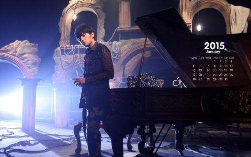

周杰伦
周杰伦出生于1979年1月18日，是台湾华语流行歌曲男歌手、音乐家、编曲家、唱片制片人、魔术师。同时是演员、导演、电子竞技职业战队J Team的老板。
重要事件
- 2000年，周杰伦发行了他的首张专辑《Jay》，从属于唱片公司阿尔发音乐。
- 2003年，他是《时代》杂志（亚洲版）的封面故事，被称为“亚洲流行音乐的新天王”。
- 其后他开展了六个世界巡演，在世界各地的城市中对超过1000万人表演。
- 2005年,周杰伦在电影《头文字D》开始了他的电影事业；他从此涉足许多其他的电影企划。
- 2011年，他首度进入好莱坞，主演《青蜂侠》里面助理Kato一角；
- 2016年，他再次进入了好莱坞，在电影《惊天魔盗团》中扮演小李。
荣誉和成就
- 2003年2月出道仅三年便接受美国《时代》杂志专访，并成为亚洲版的封面人物。
- 2006年受母校淡江中学之邀，获颁音乐科荣誉主任。
- 2009年被选为世界十大杰出青年代表之一。
- 2009年12月入选美国CNN评出的“25位亚洲最具影响力的人物”。
- 2010年入选美国《Fast Company》评出的“全球百大创意人物”。
- 2011年4月21日，美国《时代》杂志评出2011年全球最具影响力人物100强，票选阶段周杰伦位列第二。
- 2012年5月，登上福布斯中国名人榜第一名。
- 2019年7月21日，周杰伦的新浪微博超话影响力突破一亿，位居排行榜第一名，取代了蔡徐坤在新浪微博的霸榜地位。
- 2019年周杰伦在福布斯发布的中国100名人榜，名列第5名。
主要作品
| 年份 | 专辑名称 |
| 2000年 | Jay |
| 2001年 | 范特西 |
| 2002年 | 八度空间 |
| 2003年 | 叶惠美 |
| 2004年 | 七里香 |
| 2005年 | 11月的肖邦 |
| 2006年 | 依然范特西 |
| 2007年 | 我很忙 |
| 2008年 | 魔杰座 |
| 2010年 | 跨时代 |
| 2011年 | 惊叹号 |
| 2012年 | 12新作 |
| 2014年 | 哎呦，不错哦 |
| 2016年 | 周杰伦的床边故事 |
生活照

生平
周杰伦在台湾台北林口长大。父亲周耀中，当时任教于台北县芦洲国中，教授生物；母亲叶惠美则是林口国中美术教师。
14岁时父母离异，由父亲担任监护人，年满18岁后选择与母亲共同生活，周杰伦在台湾民视新闻台由胡婉玲主持的节目《
台湾演义》专访中，澄清《爸，我回来了》的灵感，只是对社会上家暴现象的感慨，并非指涉父母间的状况，父亲方面的
亲戚也曾质疑过他，他还为此向亲戚们澄清，为此误解抱歉过。
周杰伦他自小对音乐表现出浓厚的兴趣，并且喜欢模仿歌星、演员表演和变魔术。3岁开始学习钢琴。周杰伦国小时住在台北市光华商场附近，就读忠孝国小。国中时就读金华国中，
此时期他的父母因长年争执而决议离婚，使周杰伦的性情大受影响。除了音乐外，周杰伦热爱篮球，他在国中参加篮球队，结识学长陈建州。